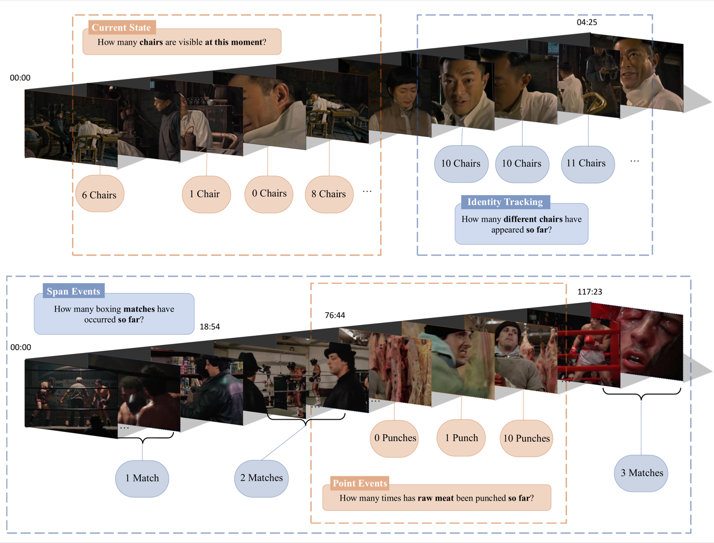

ECCV 2026
SVCBench: A Streaming Video Counting Benchmark for Spatial-Temporal State Maintenance
Repositions counting as a minimal, deterministically verifiable probe for how models maintain world state during video playback. 406 videos, 1,000 streaming QA pairs, and 4,576 timeline query points across 8 subcategories reveal that current multimodal LLMs nearly fail on long-horizon state maintenance such as periodic event counting.